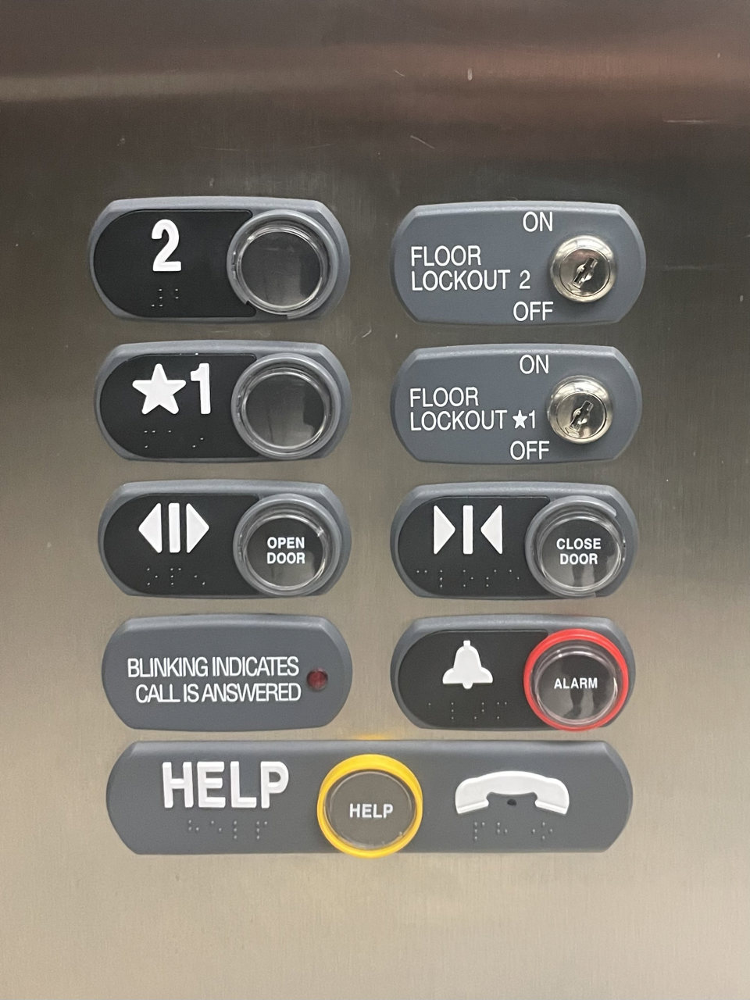

HCI Project 1 Report
Project Repository
To get a C:
- The elevator in the Petroleum Engineering building

- Gif image of interface in use

Issues with the current design:
- Maintenance buttons clutter up normal use case
- Reasoning: Having more buttons for humans to process makes normal use case take longer
- Emergency call button gives feedback from a different button
- Reasoning: Interface should give feedback from the same button
- Excess of emergency buttons
- Reasoning: Having two buttons for separate emergencies creates more stress in an already stressful situation
- Cannot unselect a floor
- Reasoning: Wastes time going to wrongly selected floor
To get a B:
Common uses:
- Person walks in, presses 1 or 2
- Person presses "Close Door" if impatient, or pressed "Open Door" if they see a person trying to catch the
elevator
Rarer uses:
- Elevator is stuck, person presses alarm or calls for help
- Maintenance locks floors